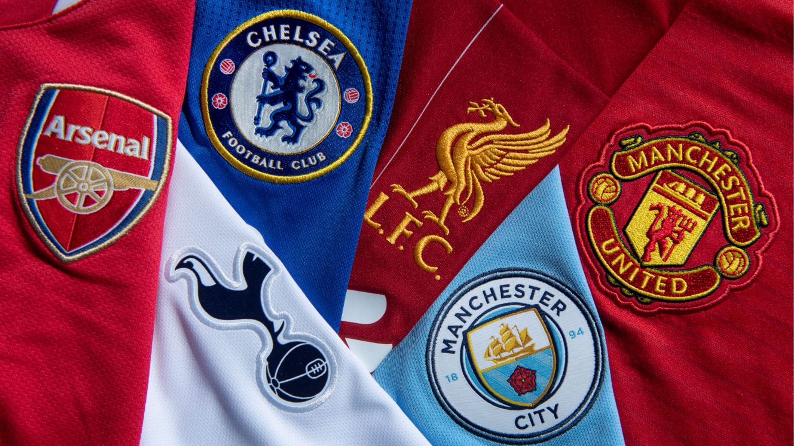
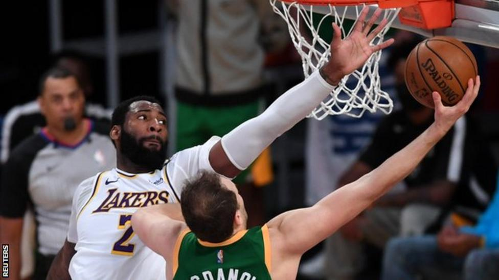
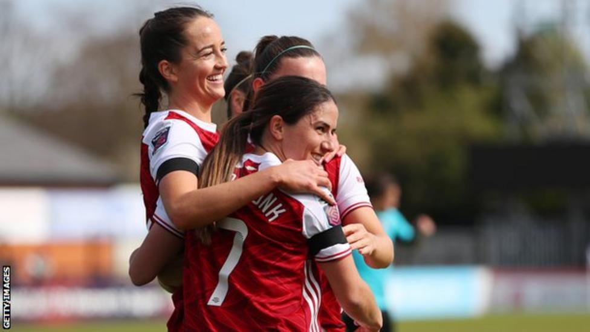
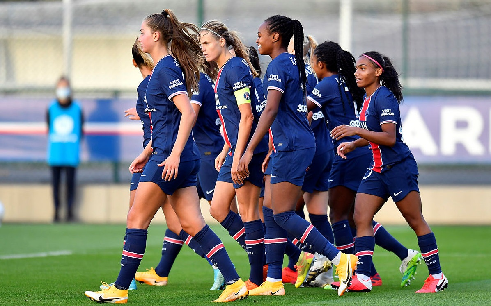

European Super League: Premier League's 'Big Six' agree to join new league
Manchester United, Liverpool, Arsenal, Chelsea, Manchester City and Tottenham are among 12 clubs who have agreed to join a new European Super League.In a seismic move for European football, the Premier League clubs will join Real Madrid, Barcelona, Atletico Madrid, AC Milan, Inter Milan and Juventus.UK Prime Minister Boris Johnson, Uefa and the Premier League condemned the move when news of it broke on Sunday.
Norway 0-3 Turkey
Turkish A National Team beat Norway 3-0 in the second match of 2022 FIFA World Cup European Qualifications, Group G.The match was played at La Rosaleda, Malaga, Spain. Turkey's goals were scored by Ozan Tufan (Min. 4, Min. 59) and Çağlar Söyüncü (Min. 28) Norway's Thorstvedt was shown a red card and sent off (Min. 80.) Turkey will play their third match of the group against Latvia in İstanbul Atatürk Olympic Stadium, on March 30.
NBA: Andre Drummond helps Los Angeles Lakers beat Utah Jazz in overtime
Andre Drummond scored a team-high 27 points as the Los Angeles Lakers beat the Utah Jazz 127-115 in overtime.The Jazz, who lead the Western Conference, were without injured starters Donovan Mitchell, Mike Conley Jr and Rudy Gobert.The Lakers, defending NBA champions, were missing their two biggest stars in Anthony Davis and LeBron James.
Women's FA Cup: Arsenal and West Ham secure emphatic wins
-info Women's Super League sides Arsenal and West Ham United secured emphatic wins on a goal-filled Sunday in the Women's FA Cup fourth roun.
PSG through to Women's Champions Leauge, semi-finals ending Lyon's five-year reign as European champions
Paris St-Germain ended Lyon's five-year reign as European champions with a second-leg win that sent them into the Women's Champions League semi-finals....After a 1-0 victory in the first leg, Lyon took an early lead when Catarina Macario struck from close range.PSG midfielder Grace Geyoro equalised midway through the first half before a Wendie Renard own goal ensured Lyon's progress on away goals.It was only Lyon's second defeat in 23 games this season.Victory for PSG keeps alive their hopes of a first Champions League win.
Everything about Premier League